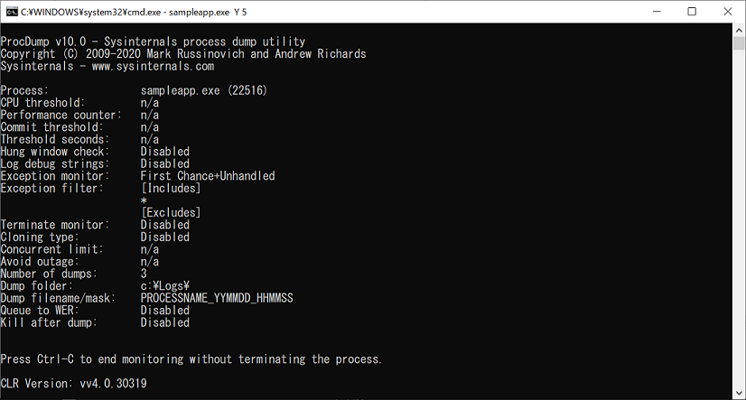

こんにちは、Japan Developer Support Core チームの早川です。
アプリケーションが例外によりクラッシュしてしまう問題の調査では、例外発生時のプロセスのダンプ ファイルを採取して解析することが 1 つの有効な手段となります。本ブログでも WER を使って Dump を採取する の記事で、OS に付属の機能である Windows Error Reporting (WER) を利用してクラッシュ時のダンプ ファイルを採取する方法をご紹介していますので是非ご覧ください。
WER は有効な機能ですが、first-chance 例外を検知するものでは無いことから、例えば、アプリケーションが利用しているサードパーティ製のミドルウェアが例外を独自にハンドリングして、プロセスとしては正常に終了させるといった処理を行われているようなケースではご利用いただけません。この他、アプリケーション内の try/catch で例外をハンドリングしているが、例外発生時の詳しい情報を確認したい場合などにも、first-chance 例外を捕捉してダンプ ファイルを出力する必要がありますが、こういった場合には、デバッガー ツールを対象のプロセスにアタッチして first-chance 例外を捕捉してダンプを出力するような必要があります。
一方で、再現性の低い問題や、自動起動するサービスで発生する問題、エンド ユーザーの環境で発生しているような問題の場合は、アプリケーションを起動するたびに毎回デバッガーをアタッチしてダンプ出力の設定を行うことは困難です。
本稿ではそのようなケースでご利用いただけるダンプ ファイルの採取方法についてご案内いたします。
以下では Sysinternals に含まれる ProcDump というツールと、Image File Execution Options というレジストリを利用します。
Image File Execution Options について
Image File Execution Options (IFEO) のレジストリを設定することで、指定したアプリケーションの実行時に GFlags を適用したり、デバッガー ツールがアタッチされた状態でアプリケーションが起動するように設定することができます。(参考 : Use the Registry Editor to automatically start a process in the debugger)
ご注意
IFEO のレジストリを設定することでアプリケーション起動時にデバッガーを自動的にアタッチさせることができますが、設定を誤ると対象のアプリケーションを起動できなくなる場合があります。通常のアプリケーションであればレジストリを元に戻すことで対応できますが、OS の起動に必要なサービスやプロセスに対して誤った設定をしてしまった場合、復旧が困難になる可能性があります。このため、OS が提供するプロセスやサービスに対して IFEO を設定したり変更しないようご注意ください。
手順
ProcDump から最新バージョンのツールをダウンロードして zip 展開し、対象の環境にコピーします。以下では、C:\ProcDump フォルダー内に配置したものとして説明します。また、ダンプの出力先フォルダーとして C:\Logs フォルダーを作成しておきます。
レジストリ エディターを開き、以下のキーが存在しない場合は作成します。
(32 bit OS 上で動作する 32 bit アプリ、または、64 bit OS 上で動作する 64 bit アプリの場合)HKEY_LOCAL_MACHINE\SOFTWARE\Microsoft\Windows NT\CurrentVersion\Image File Execution Options\<アプリケーション実行ファイル名>(64 bit OS 上で動作する 32 bit アプリの場合)HKEY_LOCAL_MACHINE\SOFTWARE\WOW6432Node\Microsoft\Windows NT\CurrentVersion\Image File Execution Options\<アプリケーション実行ファイル名>※ レジストリ エディターの誤った操作はシステムに深刻な問題を及ぼすことがありますので、ご利用に際しては十分ご注意くださいますようお願いいたします。例 : sampleapp.exe の場合(32 bit OS 上で動作する 32 bit アプリ、または、64 bit OS 上で動作する 64 bit アプリの場合)HKEY_LOCAL_MACHINE\SOFTWARE\Microsoft\Windows NT\CurrentVersion\Image File Execution Options\sampleapp.exe(64 bit OS 上で動作する 32 bit アプリの場合)HKEY_LOCAL_MACHINE\SOFTWARE\WOW6432Node\Microsoft\Windows NT\CurrentVersion\Image File Execution Options\sampleapp.exe手順 2 で作成、または確認したキーに、以下の項目を作成します。
名前 : debugger種類 : REG_SZ手順 3 で作成した項目のデータに指定したデバッガー ツールがアプリケーションの起動時に自動的にアタッチされます。アプリケーションの種類や調査対象の問題に応じてデータを設定します。以下に、いくつか例をご案内します。ProcDump のパス、およびダンプ出力先フォルダーについては、適宜読み替えてください。
例1) System.InvalidOperationException の first-chance 例外を最大 10 回まで捕捉してダンプ出力するC:\ProcDump\procdump.exe -accepteula -ma -e 1 -f "System.InvalidOperationException" -n 10 -x c:\Logs例2) second-chance 例外または正常終了した場合にダンプ出力するC:\ProcDump\procdump.exe -accepteula -ma -e -t -x c:\Logs例3) CPU 使用率 50% 以上が 10 秒以上続いたら最大 3 個までダンプ出力するC:\ProcDump\procdump.exe -accepteula -ma -c 50 -s 10 -n 3 -x c:\Logs例4) .NET アプリ内で発生したネイティブ コードの first chance 例外を最大 10 回まで捕捉してダンプ出力するC:\ProcDump\procdump.exe -accepteula -ma -e 1 -n 10 -g -x c:\Logs
設定は以上になります。
設定が機能している場合、アプリケーションの起動時に以下のような画面が表示されます。

設定を解除する場合は、上記手順で設定したレジストリ キーの debugger エントリを削除してください。
ProcDump には指定可能なオプションが多数あり、上記以外にもご利用いただけるシナリオがありますので、ドキュメントに記載のオプションについても是非ご参考ください。ダンプ ファイルの採取に WER をご利用いただけないようなケースでは、本稿でご紹介した方法もご検討いただけましたら幸いです。
最後に、上記の設定でツールが動作することを検証するための C# のサンプル コードをご案内します。
例外や High CPU を模擬するサンプル アプリケーション
1 | using System; |
本ブログの内容は弊社の公式見解として保証されるものではなく、開発・運用時の参考情報としてご活用いただくことを目的としています。もし公式な見解が必要な場合は、弊社ドキュメント (https://learn.microsoft.com や https://support.microsoft.com) をご参照いただくか、もしくは私共サポートまでお問い合わせください。